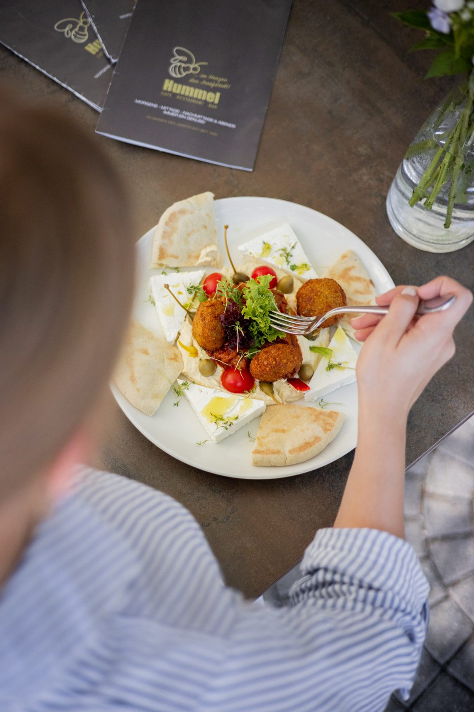

Tageszeitung
Kaffee mit sämtlichen in- und ausländischen Tageszeitungen, Bundesländer-Blättern und Journalen Ihrer Wahl.
Start › Über uns
Über uns
Seit 1935 in der Josefstädter Straße: drei Generationen Familie Hummel, ein Haus, das Tradition bewahrt und trotzdem dem Trend der Zeit folgt.
Deine Stadt, dein Wiener Kaffeehaus! Unter dieser Devise arbeiten das Café Hummel und sein Team daran, das Fundament der Tradition zu bewahren und zugleich dem Trend der Zeit zu folgen.
Genießen Sie Ihren Kaffee mit sämtlichen in- und ausländischen Tageszeitungen, Bundesländer-Blättern und Journalen Ihrer Wahl. Probieren Sie unsere Kaffeehaus-Schmankerl, verbringen Sie mit Freunden einen gemütlichen Abend mit Schach- und Kartenspielen in unserem Club- und Fernsehraum – oder feiern Sie Ihr Fest bei uns.
Im Sommer lädt die Sonnenterrasse direkt in der Josefstädter Fußgängerzone zum Verweilen ein. So erleben Sie heute eine ganz besondere Atmosphäre: eine Melange aus dem Besten von drei Generationen Familie Hummel.

Eine Reise durch die Zeit
Als Karl Hummel 1935 das damalige Café Parzival betrat, wusste er ganz genau, dass dieses Café einmal Geschichte schreiben würde – und das bis in das nächste Jahrtausend.
Sohn Georg Hummel übernimmt mit seiner Gattin Elisabeth die Geschäftsleitung. Mit persönlichem Einsatz, Mut zum Risiko und neuen Ideen wird aus dem beliebten Lokal das Café Restaurant Hummel mit seinen 30 Mitarbeitern, wie man es heute kennt.
Seit 2005 führt Christina Hummel das „Hummel“ in dritter Generation. Sie und ihre Mitarbeiterinnen und Mitarbeiter tragen den „Treffpunkt der Wiener Lebensart“ ins neue Jahrtausend.
Um den Ansprüchen der Gäste gerecht zu werden, bringt Christina Hummel ihre Vorstellungen ein und initiiert eine sanfte Renovierung: Das Erscheinungsbild wird mit Bedacht auf die traditionelle Kaffeehaus-Kultur und viel Gefühl adaptiert.
Im Mai 2025 feiert das Haus sein 90-jähriges Bestehen. Fotos der Feier: © Katharina Schiffl.
Der Hummel Service
Kaffee mit sämtlichen in- und ausländischen Tageszeitungen, Bundesländer-Blättern und Journalen Ihrer Wahl.
Alle Speisen und Heißgetränke gibt es in recycelbarer Verpackung zum Mitnehmen – für zu Hause oder fürs Büro.
Heute nicht mehr wegzudenken: schnelles Internet, kostenfrei.
Montag bis Freitag von 8 bis 9 Uhr kostet jeder Kaffee € 2,50. Die frühe Hummel fängt den Tag.
Ein geselliger Moment bei einer Runde Karten, Backgammon oder Schach auf unseren Spieltischen.
Im Sommer die Terrasse in der Fußgängerzone, drinnen die kühle Erfrischung.
Die Bibliothek steht für private und firmenbezogene Feiern oder Pressekonferenzen zur Verfügung.
Österreichische und Deutsche Bundesliga sowie internationale Spiele über sky TV und DAZN.
Ihre Kleinen sind jederzeit willkommen – mit eigener Spielecke und schwungvollem Schaukelpferd.
Gutscheine von SodexoGutscheine von EdenredApple PayCafé-Hummel-AppMJAM & Wolt
KarriereOffene Stelle
Das Küchenteam sucht Verstärkung. Wer gern in einem Haus arbeitet, in dem die warme Küche von 11 bis 22 Uhr läuft und das Frühstück um 8 Uhr beginnt, ist hier richtig.
Bewerbungen gehen im Live-Betrieb direkt an die Geschäftsleitung – ohne Umweg über ein Postfach, das niemand liest.
Auf der bestehenden Website existiert die Stellenanzeige nur als alte Meldung im Archiv, ohne Bewerbungsmöglichkeit.
Danke
Christina Hummel, Familie Hummel und das Mitarbeiterteam.